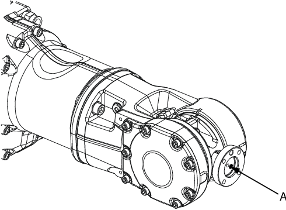
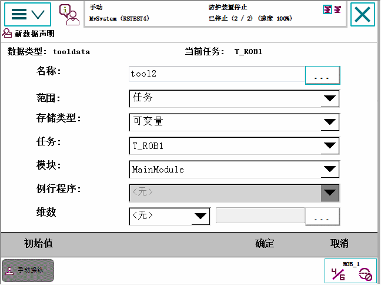

当您创建新工具时，将生成tooldata数据类型的变量。该变量的名称将是该工具的名称。更多关于数据类型的信息，请参阅技术参考手册 - RAPID指令、函数和数据类型。
新工具具有质量、框架、方向等等初始默认值，这些值在工具使用前必须进行定义。
默认工具 (tool0) 的工具中心点位于机器人安装凸缘的中心，与机器人基座方向一致。
创建新工具时，您可以定义其它工具中心点。 有关工具和工具中心点的详细信息，请参阅什么是工具？和什么是工具中心点？。

A | tool0 的工具中心点，TCP |
操作 | |
1 | 在 ABB 菜单中，点击 Jogging（微动控制）。 |
2 | 点击 Tool（工具），显示可用工具列表。 |
3 | 点击 New（新建）创建新工具。  输入每个字段的数值，参阅下表。 |
4 | 单击 OK（确定）。 |
如果您要更改... | 那么... | Recommendation（建议） | ||
工具名称 | 点击 Name（名称）旁边的...按钮 | 工具将自动命名为 tool 后跟顺序号，例如 tool10 或 tool21。 建议您将其更改为更加具体的名称，例如焊枪、夹具或焊机。
| ||
范围 | 从菜单中选取最佳范围 | 工具应该始终保持全局状态，以便用于程序中的所有模块。 | ||
存储类型 | - | 工具变量必须始终是持久变量。 | ||
模块 | 从菜单选择声明该工具的模块。 | |||
数组的轴的大小 | 点击 Dimension（维数）旁边的...按钮 |
 | 注意 创建的工具直至您已定义工具数据（TCP 坐标、方向、重量等）之后才可使用。 有关操作详情，请参阅编辑工具数据 和LoadIdentify，载荷测定服务例行程序。 |